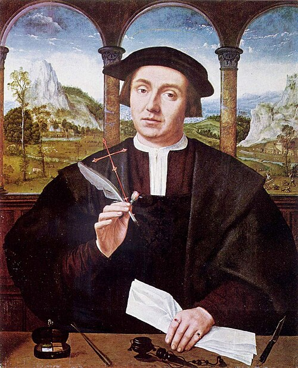

Картинная галерея портретов
 Портрет старика
Портрет старика

“Портрет нотариуса”
Крест, перо, роза, бумага и письменные принадлежности указывают, что перед нами нотариус - человек, чья обязанность заверять людям документы, однако его собственная личность осталась неустановленной. Есть прямота в его взгляде и точность во всей картине, от старательно переданного сходства с моделью до пейзажа за аркадой. Массейс испытал сильное влияние Леонардо да Винчи и Альбрехта Дюрера; люди на его портретах обычно предстают на фоне лесного или горного пейзажа, подобного тому, какой можно видеть на картине Мона Лиза. Существуют и другие указания на влияние Леонардо: некоторые из сатирических рисунков Массейса похожи на леонардовские карикатурные головы стариков и старух, названные гротесками. Согласно преданию, Массейс был кузнецом, который собственными силами получил образование, стал живописцем и музыкантом. Выдающийся мастер в области реалистического портрета, он славился высокой безупречной техникой. Дюрер, Гольбейн, Леонардо да Винчи, Мемлинг, Зиттов.
 “Мэриан”
“Мэриан”